|
| |||||||||||||
|
|
||
Conventional motion planning approaches determine paths between start and goal configurations, such as those described in chapters 2, 4, 5, and elsewhere. However, applications such as robotic demining and floor cleaning require a robot to pass over all points in its free space, i.e., follow a path to cover the space. A planner can use an exact cell decomposition to cover an unknown space by simply covering each cell and then using the adjacency graph to ensure each cell is visited and hence covered. This approach requires that each cell can indeed be covered. Naturally, cells with simple structure can easily be covered; e.g., the cells of the trapezoidal decomposition can be covered with simple back-and-forth motions.
Unfortunately, the trapezoidal decomposition may not produce efficient paths for coverage. Here, we measure efficiency in terms of area covered vs. path length traversed. Observe that cells in the trapezoidal decomposition can be "clumped" together to form more efficient coverage paths. Perhaps a bigger drawback to the trapezoidal method is that it fundamentally requires a polygonal workspace, which is not a realistic assumption for many applications.
In this section, we use Morse functions (chapter 5, section 5.5) to define cells that have simple structure and can be defined in nonpolygonal spaces. Recall that a Morse function is one whose critical points are nondegenerate; from a practical perspective, this means that critical points are isolated. In this section, we evolve the trapezoidal decomposition to a new decomposition called the boustrophedon decomposition and then show that the boustrophedon decomposition is a Morse decomposition. Next, we generalize the boustrophedon decomposition to form other Morse decompositions.
From a coverage perspective, a minor shortcoming of the trapezoidal decomposition is that many small cells are formed that can seemingly be aggregated with neighboring cells. Reorganizing the cells can result in a shorter and more efficient path to cover the same area.
To address this issue, the boustrophedon[1] cell decomposition approach was introduced [110]. The boustrophedon decomposition is formed by considering the vertices at which a vertical line can be extended both up and down in the free space (figure 6.9). We call such vertices critical points, and we will show that these correspond to the same critical points in Canny's roadmap described in chapter 5, section 5.5.1.
With the decomposition in hand, the planner determines a coverage path in two steps. First, the planner determines an exhaustive walk through the adjacency graph (figure 6.10). This list can be computed by using a depth-first search algorithm. Once the ordered list of cells is determined, the planner then computes the explicit robot motions within each cell. The path in each cell consists of a repeated sequence of straight-line segments separated by one robot width and short segments connecting the straight line-segments. Typically, these short segments follow the boundary of the environment.
We generalize the boustrophedon decomposition beyond polygons by borrowing ideas from Canny's work [91,93] which first applied a "slicing method" to motion planning, as described in chapter 5. Recall that a slice is a is a codimension one manifold denoted by 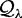. The slices are parameterized by λ (varying λ sweeps a slice through the space). The portion of the slice in the free configuration space, 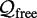, is denoted by 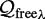, i.e., 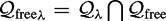. Recall from chapter 5 that connectivity changes of 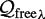 were used to ensure the connectivity of the roadmap. Now, we are going to use the connectivity changes to define cells in a cell decomposition.
Recall from section 5.5 in chapter 5 that the slice can be defined in terms of the preimage of the projection operator 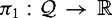. In the plane π1(x, y) = x and the slice 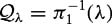 corresponds to a vertical slice. Increasing the value of λ sweeps the slice to the right through the plane. As the slice is swept through the target region, obstacles intersect (or stop intersecting) the slice in the free space, severing it into smaller pieces as the slice first encounters an obstacle (or merging smaller pieces into larger pieces as the slice immediately departs an obstacle). The connectivity changes occur at points termed critical points. Note that critical points are analogous to vertices which have vertical extensions that can be drawn both up and down.
Slices that contain critical points are termed critical slices. It should be emphasized, however, that the slice 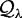 itself does not change connectivity, but rather the slice in the free space changes connectivity at critical points. Naturally, 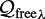 contains one or more connected components, which are termed slice intervals and are denoted 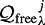 for the jth open connected slice interval. So, 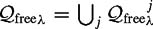. Denote the set of slice intervals that contain a critical point by I *. Note that a critical point cannot be in the interior of a slice interval; it can only lie at the endpoints of a slice interval. With this, we can define a Morse decomposition
A Morse decomposition is an exact cell decomposition whose cells are the connected components of 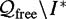.
In figure 6.11, the dashed lines are the slice intervals lying in the free space and have end points lying on obstacle boundaries. Each of these slice intervals has at least one critical point on an obstacle boundary as well. When the slice intervals are removed from the free space, the remaining free space is still two-dimensional but is no longer connected. Each connected component is a cell.
One can see that within a cell, the slice interval remains connected and only extends or contracts. Morse theory assures us that between critical slices, "merging" and "severing" of slices do not occur, i.e., the topology of the slice remains constant.
This is useful for tasks such as coverage because the robot can trivially perform simple motions between critical points and guarantee complete coverage of a cell (figure 6.11). A coverage path within a cell contains two parts: motion along the slice and motion along the boundary of the obstacles. A bulk of the coverage operation occurs with motions along the slices, sometimes called laps, and this motion terminates when the robot encounters an obstacle. Motion along the boundary of the obstacle directs the robot to move "one width[2] over," i.e., increase its slice function value by one robot width while following the cell boundary along an obstacle. We call the distabce between subsequent laps as the inter-lap distance.
Cao, Huang, and Hall [96] implicitly use a Morse decomposition to achieve coverage but they assume all obstacles are convex. The Morse decompositions, defined above, assume that the critical points are not degenerate, but Butler et al. [86] present a coverage algorithm that uses decompositions of rectilinear spaces where all critical points are degenerate.
The definition of a Morse decomposition is not specific to a particular slice. In the previous section, the slice was defined by the preimage of a real-valued function, which happened to be π1.We can use this function to define the boustrophedon decomposition which induces back-and-forth coverage pattern. Now we will vary the function that defines the shape of the slice, resulting in different decompositions and hence different patterns by which the free space is covered. Now, we rewrite the definition of the slice as the preimage of a general real-valued function 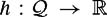. For the boustrophedon decomposition in the plane, this function is h(x, y) = x.
We can use the function 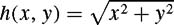 to produce a pattern of concentric circles in the plane. Critical points occur at points where a circle changes connectivity; this happens when it is tangent to an obstacle. Critical points are then used to form annular or arc-shaped cells and the adjacency graph (figure 6.12, left). As before, a planner determines a coverage path in two steps: first it finds an exhaustive walk through the adjacencygraph and then it plans the explicit coverage path in each uncoveredcell. The coverage pattern within a cell has three parts: motion along a slice, motion orthogonal to the slice, and motion along the boundary of the cell. The slice here, however, is not a straight-line segment, but rather a circle or subset of a circle. Therefore, in the plane, a planner initially directs the robot to circumnavigate a circle, move the interlap distance along the radius of the circle, and then circumnavigate a circle of a larger radius. If the robot encounters an obstacle while circumnavigating a circle, the planner simply directs the robot to follow the obstacle boundary until the robot has moved an interlap distance and then follows the circle of a larger radius.
Note that instead of following a circle and stepping outward, the robot can follow a spiral pattern until it encounters critical points (figure 6.12, right). The spiral pattern bypasses the need to step along the radial direction. This yields a path that maximizes the area covered per unit distance traveled in regions sparsely populated with obstacles.
The function  induces a pattern that is orthogonal to the set of concentric circles (figure 6.13). Using this pattern to perform coverage has the effect of covering the region closest to the center of the pattern more densely. This is useful if the likelihood of finding a desired object is highest at the center of the pattern and the robot's detector experiences false negatives (something is under the detector but the detector does not sense it).
induces a pattern that is orthogonal to the set of concentric circles (figure 6.13). Using this pattern to perform coverage has the effect of covering the region closest to the center of the pattern more densely. This is useful if the likelihood of finding a desired object is highest at the center of the pattern and the robot's detector experiences false negatives (something is under the detector but the detector does not sense it).
The function h(x, y) =|x|+|y| can be used to produce cells that look like rotated squares or diamonds (figure 6.14). For coverage, instead of driving in concentric squares, we can direct the robot to "spiral" out while looking for critical points, hence the term squarel. The resulting pattern is shown in figure 6.14. The squarel pattern serves as an approximation to the spiral pattern that is easier to implement on differential drive robots.
Note that h(x, y) =|x|+|y| is not smooth so we have to use the formulation of the generalized gradient given in chapter 5, section 5.5.2. The squarel pattern has two parts: a straight line segment and a 90 degree turn, as can be seen in figure 6.14. Note that critical points occur when the flat portions of {(x, y): |x|+|y|= λ} become tangent to an obstacle and at some of the 90 degree turn points. At these points, the obstacle surface normal lies in the convex hull of the two flat portions that meet at the 90 degree turn point.
The brushfire algorithm [262] is a popular technique to construct the GVD (figure 6.15). In chapter 4, section 4.3.2, we described the brushfire algorithm on a grid; here we describe it on a continuous space.
The brushfire algorithm is so named because in implementation, imaginary wave fronts emanate from each obstacle and collide at points on the GVD. By noting the location of the collision points, the algorithm constructs the GVD. The algorithm, however, induces a decomposition that is not the Voronoi regions of the GVD. Instead, the decomposition models the topology of the wave fronts as they initially collide with each other and form or destroy new wave fronts. Compare figure 6.15 and figure 6.16.
The distance function D, which measures the distance between the point x and the nearest point c on the closest obstacle 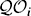, admits a decomposition termed the brushfire decomposition. Each slice of D is a wave front where each point on the front has propagated a distance λ from the closest obstacle. As λ increases, the wave fronts progress. Cells of the brushfire decomposition are formed when these wave fronts initially collide. Figure 6.16 contains a decomposition induced by D where regions of the same color represent a cell. Whereas for the boustrophedon decomposition we are essentially "pushing" a line segment through the cell, here we are "growing" a wave front that originates on the boundary of the environment, which in figure 6.16 has three obstacles: the exterior, the vertical barlike obstacle, and a triangle. These three wave fronts progress until they initially collide with each other, which occurs at critical points. The light gray regions adjacent to the obstacles represent the three newly formed cells. The type of critical points that define the gray regions in figure 6.16 are saddle points. In fact, all of the cells are defined by saddle points of D. Note that since D is nonsmooth, its generalized gradient must be used as well.
To determine the coverage path, the planner again first derives the decomposition, finds an exhaustive walk through the adjacency graph, and then plans the coverage path within each cell. The coverage path within a cell consists of three parts: motion along the slice, motion orthogonal to the slice, and motion along the boundary of the cell (figure 6.17). For motion along the slice, the robot follows a path at a fixed distance from the nearest obstacle. The robot follows an obstacle boundary at a fixed distance until it returns to its starting point or a point where the distance to two obstacles becomes the same. When the robot returns to its starting point, it simply moves away from the closest obstacle by one width and repeats following the obstacle boundary at the new fixed distance. When the robot becomes doubly equidistant, it is on the boundary of the cell, at which point it follows the GVD. The robot follows the GVD until it reaches a point where the distance to the nearest obstacle is an integer multiple of the robot's diameter, at which point the robot then resumes obstacle boundary-following at this fixed distance. Here, the boundary-following motion is much different from before because cell boundaries lie exclusively in the free space with the exception of the first slice λ = 0.
The pattern induced by the brushfire algorithm is ideally suited for coverage with mobile robots experiencing dead-reckoning error but have a large sensing range. A mobile robot can follow this pattern servoing off of the boundaries of the obstacles by moving forward and maintaining a fixed distance from the boundary (figure 6.17). Since the robot is servoing off of range readings to the obstacle boundary, this method is insensitive to dead-reckoning error. This benefit, however, requires that the robot can indeed measure distance to the obstacle, which could be far away from the robot. This is in contrast to the boustrophedon decomposition approach which requires only very limited sensing range but which is sensitive to dead-reckoning error.
Let h(x, y) be the length of the shortest path between a point (x, y) and a fixed location. The level sets h−1(λ) foliate the free space where for a given λ, the set of points in h−1(λ) are a distance λ away from the fixed point in the free space. This particular function is sometimes called the wave-front potential, which was described for a discrete space in chapter 4, section 4.5. Imagine a wave front starting at qstart and expanding into the free space. The value λ parameterizes each wave front (or level set of h). Once the wave front crosses qgoal, the planner can backtrack a path from qgoal to qstart [208].
The shortest path-length function induces a cell decomposition, as well. Critical points of this function occur both when wave fronts becomes tangent to obstacles and when wave fronts collide (figure 6.18). Note how once the waves collide, they propagate as one wave with a nonsmooth point that originated at the critical point. In fact, this nonsmooth point traces the set of points of equal pathlength to the goal for two classes of paths, one to the right of the obstacle and one to the left. This decomposition is especially useful for coverage by a tethered robot where the robot's tether is incrementally fed and the robot sweeps out curves each at constant tether length.
Now, let's place the robot in an unknown environment, but assume it has the standard range sensor ring as depicted in chapter 2, figures 2.5 and 2.16. The task is to simultaneously cover and explore the unknown space. This can be reduced to concurrently and incrementally covering each cell while constructing the adjacency graph. For sensor-based coverage, however, we incrementally construct a "dual" graph called a Reeb graph [154]. This graph is dual in the sense that the nodes of the Reeb graph are the critical points and the edges connect neighboring critical points, i.e., correspond to cells. For the sake of explanation, we limit discussion to Morse decompositions defined by h(x, y) = x, i.e., the boustrophedon decomposition. See figure 6.19 for an example of the boustrophedon decomposition and its corresponding Reeb graph.
The procedure of concurrently covering the cells and constructing the Reeb graph is depicted in figure 6.20. In figure 6.20(a), the robot starts to cover the space at the critical point Cp1 and the planner instantiates an edge with only one node. When the robot is done covering the cell between Cp1 and Cp2, the planner joins their corresponding nodes with an edge in the graph representation (figure 6.20b). Now the robot has two new uncovered cells. Since the space is a priori unknown, the planner arbitrarily chooses the lower cell to cover. When the robot reaches Cp3, nodes of Cp2 and Cp3 become connected with an edge and the lower cell is completed (figure 6.20c). At Cp3, the planner directs the robot to cover the cell to the right of Cp3. When the robot senses Cp4, it goes back to Cp3 and starts to cover the upper cell. When the robot returns to Cp2, the planner determines that all of the edges of all of the nodes (critical points) have been explored (figure 6.20d). Thus the planner concludes that the robot has completely covered the space. Figure 6.21 shows different stages of this incremental construction in an a priori unknown 2.75 meter × 3.65 meter room with a Nomad mobile robot that has a sonar ring.
Two details remain: How does the robot sense a critical point when it encounters one and how does the robot find all of the critical points? Critical point sensing is rather straightforward: the robot looks for points where the surface normals are parallel to the sweep direction. This is a direct consequence of lemma 5.5.2 in chapter 5, section 5.5.1. Here, we are looking for extrema of h on the boundaries of the obstacles. Let m implicitly represent a function whose preimage is the surface boundary. The matrix D(h, m)(x) (chapter 5, section 5.5.1) then loses rank when ∇h(x) is parallel to ∇m(x), i.e., the slice normal is parallel to the surface normal (figure 6.19). This can easily be detected by looking at the global minimum of the range sensors in a range sensor ring.
The final challenge is to ensure that the robot encounters all critical points. Assume the robot starts to cover a cell at one of its defining critical points. While covering the cell, the robot looks for the other critical point that indicates complete coverage of the cell and the next node in the Reeb graph. We term this critical point the closing critical point. Since the Reeb graph is connected, the main challenge is to guarantee that the robot finds the closing critical point of each cell.
Most conventional coverage algorithms (e.g., [187, 190, 300]) miss the closing critical point because they perform the bulk of their coverage using a raster scan type of motion: move along a slice or lap to an obstacle, follow the obstacle boundary for a lateral distance equal to interlap spacing, and repeat. This alternates boundary-following between the "ceiling" and "floor" of the cell, as shown in figure 6.22. Unfortunately, this raster scan approach can miss the closing critical point of a cell. In figure 6.22, since the robot did not follow the boundary of the ceiling, it cannot sense the critical points in the ceiling using the critical point sensing method, described above. We may try to solve this problem by making the robot perform boundary-following along the ceiling in the reverse direction so that it will sense the critical points related to the ceiling. We call this motion reverse boundary following. However, reverse boundary following motion by itself is still not sufficient.
The robot must undergo additional motion to detect the closing critical point. We present an algorithm called the cycle algorithm [11] that ensures that the robot will find the closing critical point while performing coverage. For details, see [11]. Let Si be the start point of the cycle algorithm; Si is on (or near) the boundary of free space. From this point the robot looks for critical points via the following phases (figure 6.23):
Forward phase: The robot follows a slice, i. e., laps, until it encounters an obstacle. Then the robot follows the boundary of the obstacle in the forward sweep direction until either the robot moves laterally one lap width or until the robot encounters a critical point in the floor.
Reverse phase: The robot executes one or more laps in the reverse direction, intermixed with reverse boundary-following. Each reverse boundary-following operation terminates when the robot finds a critical point or when the aggregate lateral motion in the reverse direction is one lap width.
Closing phase: The robot executes one or more laps along the slice, possibly inter-mixed with boundary-following. Each boundary-following operation terminates when the robot encounters Si or the slice in which Si lies.
This algorithm is the most important part of the incremental construction. It guarantees encountering the closing critical point of a cell if it exists between subsequent laps.
We define complexity of coverage in two ways: first, we establish a relationship among the number of critical points, cells, and obstacles and second we determine an upper-bound on path length given the perimeter the obstacles and the diameter Δ smallest disk that circumscribes the space (Figure 6.24). We limit our discussion to coverage with the boustrophedon decomposition. First, we establish a relationship between the number of cells, critical points and obstacles. The Reeb graph encodes the cells, critical points, and "obstacles." Note that obstacles (including the outer boundary) are represented with "faces"[3] in the graph. Graph theory uses Euler's formula to relate the number of nodes ν, edges e and faces f of a planar connected graph [57] by
The nodes of the Reeb graph correspond to critical points, its edges represent the cells and its faces depict the obstacles. Moreover, the Reeb graph is connected and planar. Therefore we can use Euler's formula with one modification. Since the outer boundary of the space is, in general, not termed an obstacle, we subtract one from the number of faces to get the number of obstacles. Let Ncp be the number of critical points, Nce be the number of cells and Nob be the number of obstacles (Figure 6.25). Then
This formula tells us that the number of cells increases linearly as the robot discovers new critical points.
Next, we calculate an upper bound on the total coverage path length. To simplify the calculation, we analyze lapping, boundary following and backtracking motions separately. Since the space is fully contained within a Δ diameter disk, the length of each lapping path can be at most Δ. There must be at least 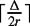 lapping paths where 2r is the interlap spacing. However, often there is an additional lap associated with starting the coverage operation within a cell (Figure 6.26). Hence, the maximum number of lapping paths is 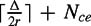. Since the length of each lapping path is bounded above by Δ, the total path length of the lapping motions is bounded above by 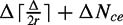.
Now we analyze the length of boundary-following paths. Let Pcell be the length of the floor and ceiling of a cell. The coverage algorithm guarantees that the robot follows the entire floor and ceiling of a cell along the obstacle boundaries. Therefore, the length of boundary-following paths in a cell is at least Pcell. However, the robot, for each cycle, performs an undo-reverse boundary-following motion to get to the start point. Hence, the lower bound is 1. 5Pcell. In the worst case, the upper bound becomes 2Pcell (Figure 6.27). Then, the total length of the boundary-following paths is less than 2Ptotal where Ptotal is the length of the perimeter of all of the obstacles and the outer boundary.
After discovering the closing critical point of a cell, the robot backtracks to the closing critical point of a cell with uncovered cells associated with it by boundary-following and (if necessary) lapping (Figure 6.28). In the worst case, the length of this backtracking path is Pcell + Δ (where the robot follows every boundary and the longest slice). When we consider all the backtracking paths, the upper bound becomes Ptotal + ΔNce.
The robot starts to cover an uncovered cell from one of its defining critical points. While discovering this critical point by performing the cycle algorithm, the robot covers a small portion of the uncovered cell. The extra boundary-following path followed by the robot to discover the critical point is bounded above by Pcell. Hence, the total extra boundary-following path length is bounded above by Ptotal.
When the robot finishes covering a cell, it performs a depth-first search on the Reeb graph to choose an uncovered cell (if any are left) (Figure 6.29). The robot reaches the uncovered cell by traversing the covered cells. To traverse a covered cell, the robot performs boundary-following and lapping motions as we explained in section 6.2.1. Within each covered cell, the total path length traveled is bounded above by Pcell + 2Δ (Figure 6.30). Since we perform a depth-first search on the graph, each cell is traversed at most once [118], and therefore the backtracking path length is bounded by 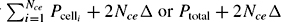.
Combining the above upper bounds, the length of the coverage path is less than
or using the modified Euler's formula,
Therefore, the total coverage path length is bounded linearly by the area of the space, the number of critical points, and the length of the perimeter of the obstacles and the outer boundary.
[1]The Greek word boustrophedon literally means "ox turning" [8]. Typically, when an ox drags a plow in a field, it crosses the full length of the field in a straight-line, turns around, and then traces a new straight line path adjacent to the previous one.
[2]Here, width is determined by the size of the detector or end-effector that is being used.
[3]A plane graph partitions the space into connected regions. Closures of these regions are called faces [57].
|
|
||
|